Project Info
| Problem ID: | 1637 |
|---|---|
| Problem Title: | Mobile App for Direct Market Access for Farmers |
| Background: | Farmers often face challenges in accessing markets, leading to lower income due to middlemen. This gap restricts their ability to sell produce at fair prices. |
| Description: | Create a mobile application that connects farmers directly with consumers and retailers. The app should include features for listing produce, negotiating prices, and managing transactions, thereby reducing dependence on intermediaries. |
| Expected Solution: | A user-friendly mobile platform that enables farmers to showcase their products and connect with buyers directly, enhancing their income potential. |
| Organization: | Ministry of Agriculture and Farmers Welfare |
| Department: | University of Agricultural Sciences, Dharwad (UASD), The Indian Council of Agricultural Research |
| Category: | Software |
| Theme: | Agriculture, FoodTech & Rural Development |

Take ons
Objectives Key motive of the problem.
- There is more dependency on the APMC (Agricultural Produce Market Committee), which fosters monopolistic practices and cartelization among traders and commission agents, leading to price manipulation and farmer exploitation.
- There comes KrishiMitra, a decentralized agricultural marketplace directly connecting farmers with consumers and retailers.
- This blockchain-powered solution uses smart contracts for lower transaction costs and higher margins by eliminating third-party intermediaries.
- Accessible designs (farmers-centric: UI/UX) throughout the application for easy listing and easy selling.
- This platform attracts genuine customers who benefit from purchasing and consuming real organic produce, which increases the customer retention rate for farmers.
- Providing end-to-end transaction, inventory, and infrastructure management to retailers and farmers, resulting in KrishiMitra as a one-stop platform that eventually benefits the target users.
- Providing end-to-end data to government agencies for monitoring the complete ecosystem.
Solutions Problems we are focusing to solve.
- Price Negotiation: Intelligent Pricing Model (AI-powered price recommendation tool) offers bid-based pricing for real-time price negotiation.
- Digital Illiteracy of Farmers: Implementing voice-guided navigation and multilanguage support in the application for ease.
- Market Trends Analysis: Using Time Series Analysis(ARIMA models) to prevent price volatility and incorporate real-time market data.
- Informed Decisions: Data-driven insights like historical prices, to support strategic planning for both farmers and government agencies.
- Empowering Small and Marginal farmers: Integrating farmer’s community, loan & insurance services to empower small-scale farmers and ease offline functionalities.
- Production Support: Quality testing facility, end-to-end logistics & warehousing support are integrated with the application.
References Links to the references we used.
Process
Tech Architecture
- React Native, NextJS
- Python Django, LangChain, ARIMA models, TensorFlow
- PostgreSQL
- AWS (Cognito, S3, DynamoDB,..)

User Flow
- Farmer (Product list, Order management, Learning Resources, Farmer Support)
- Consumer/Retailer (Product cart, Order & Inventory management)
Design System
Branding
Font
Aa
अक
Colors
Wireframes

 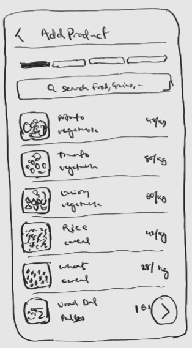
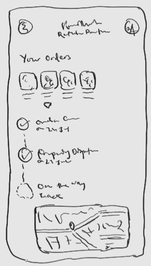
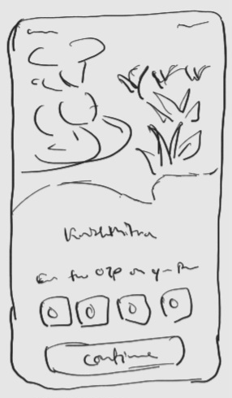
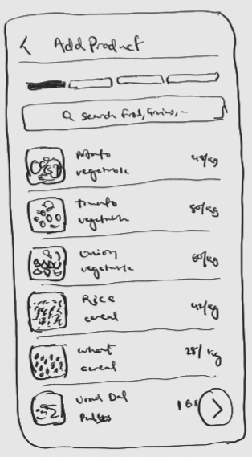
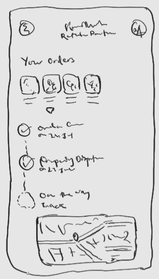
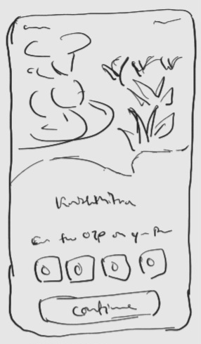
 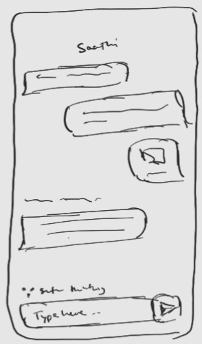
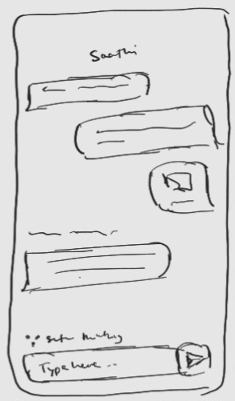
User Interface


 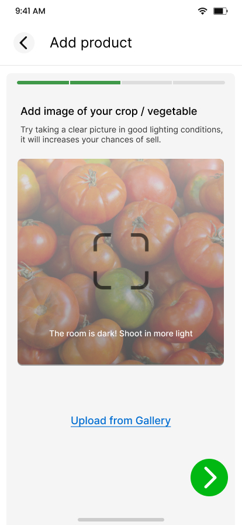
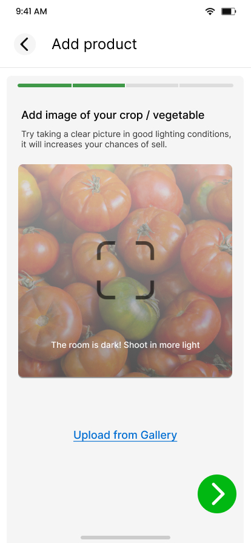


 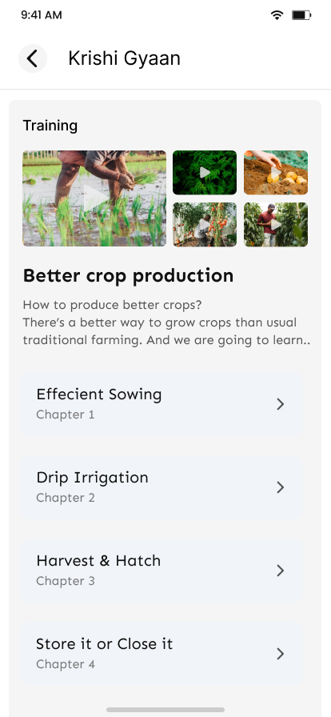
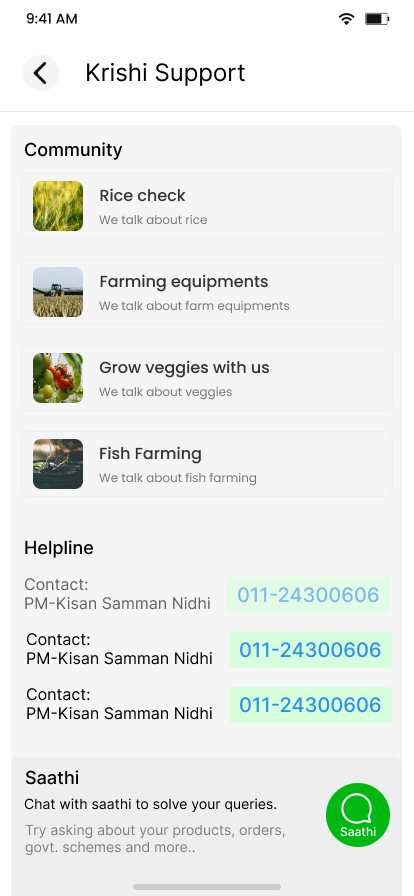
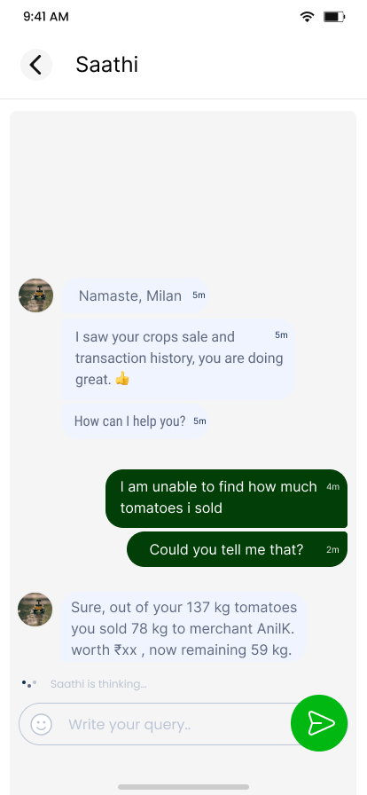
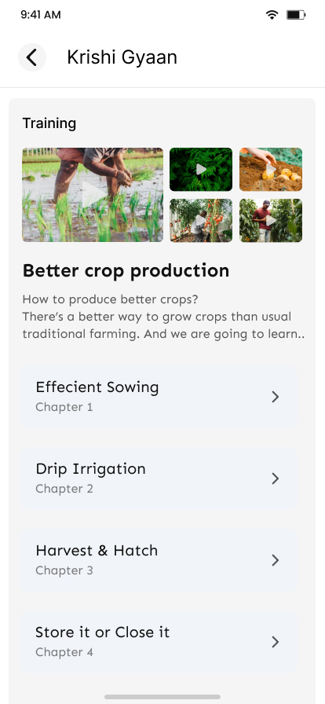
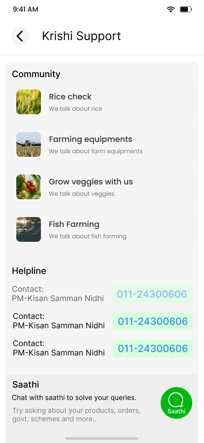
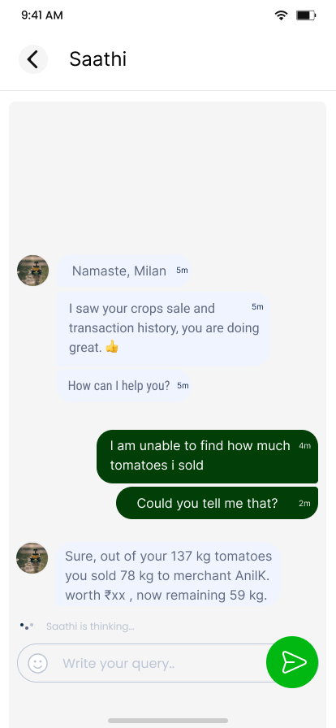
(Private)
(Private)
Technology
Architecture
- React Native, NextJS
- Python Django, LangChain, ARIMA models, TensorFlow
- PostgreSQL
- AWS (Cognito, S3, DynamoDB,..)